This work by tirimid is licensed under CC BY-SA 4.0


Meta: This conlang was mostly developed at the end of 2023–beginning of 2024, and after a long while, I never came back to finish it. There is enough content here that you may find it interesting, however I am unlikely to ever properly come back to actually complete the project. The last actual change resembling work was made 2024-10-12.
Quevish is a conlang I made. This page serves as the official documentation, reference grammar, textbook examples, and base reference dictionary. The main design principle is syntactic consistency and allowance of expressing yourself semantically in interesting ways. The glossing abbreviations used for sentence examples throughout the page can be found at the end.
In the Latin-script orthography for Quevish, capitalization is irrelevant and it is written case-insensitively. For conventional consistency, I will be writing Romanized Quevish entirely in lowercase and recommend that you do the same.
All consonants in Quevish are voiced, I think this gives an interesting sound to the language. Below are the Quevish consonants presented over the typical International Phonetic Alphabet table with their Romanizations:
| - | Bilabial | Labiodental | Alveolar | Palatal | Velar |
| Plosive | b | - | d | - | g |
| Nasal | m | - | n | - | - |
| Fricative | - | w | z | - | - |
| Approximant | - | - | - | j | - |
All vowels in Quevish are unrounded, with the exception of "o", which is rounded. See below the vowels along with their Romanizations:
| - | Front | Center | Back |
| Close | i | - | u |
| Nearclose | - | y | - |
| Openmid | e | - | o |
| Open | a | - | - |
There are a few things to talk about here. Namely: basic rules for maintaining future consistency should I ever choose to work further on Quevish, which combinations of consonants and vowels consitute legal syllables, and gemination and vowel harmony rules.
First, consistency. All syllables in Quevish take the form of a consonant, followed by a vowel, optionally followed by either "m" or "n". This is kind of like how in Japanese a syllable will end in either a "n" sound or a vowel, and where I took this idea from. So, laying it out in a visually easier format, we get the following legal syllable structures:
Also, the second rule for guaranteeing consistency (oriented towards future compatibility) is that all word-initial syllables beginning with either "g" or "z" are reserved for grammatical use and are not allowed for roots. The difference between grammatical particles and roots will be explained - but it's probably good enough to think of them as function words vs. content words in order to understand why I would want to reserve this. Thus, I guarantee that no roots in the official reference dictionary provided on this page will begin in "g" or "z".
Second, here is a table of which C-V pairs can appear in a syllable. Those not present in the table are illegal and phonotactically disallowed from appearing within syllables:
| - | b | d | g | m | n | w | z | j |
| i | bi | - | - | mi | ni | wi | zi | - |
| u | bu | du | gu | mu | nu | wu | zu | ju |
| y | by | dy | gy | my | ny | wy | zy | - |
| e | be | de | - | me | ne | we | ze | je |
| o | bo | do | go | mo | no | wo | zo | jo |
| a | ba | da | ga | ma | na | wa | za | ja |
The eliminated ones are chosen fairly arbitrarily, either because I couldn't easily pronounce them or I felt they didn't really fit within the context of the other legal syllables.
Third, gemination and harmony rules. For gemination, there is only one rule - multiple "m"s and "n"s cannot occur consecutively. Since, as a result of the other phonotactical rules, this might only happen with two-letter long scenarios, the rule on what to do is defined in terms of two-letter modification. Namely, if multiple "m"s or "n"s occur consecutively, the second letter is changed to the other. For example, the word "janna" would become "janma", and "jamma" would become "jamna". In practice, this is like search-replacing all "mm"s to "mn"s, and all "nn"s to "nm"s.
As for vowel harmony, the way it works is that there are three classes of vowels, A-class, B-class, and C-class. These classes are composed as follows:
| A-class | B-class | C-class |
| i, e, a | y | u, o |
... and these classes share overlap in a certain way. A-class vowels can only occur in words without C-class vowels. Likewise, C-class vowels can only occur in words without A-class vowels. B-class vowels can occur in all words, no matter what other vowels the word contains. As such, we can view A-class and C-class vowels as mutually exclusive over a word, and B-class words as not having this restriction.
As a simple visualization, I have created this Venn diagram (see below). Only vowel classes with overlap may co-occur in a word:
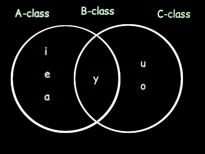Since Quevish is a morphologically very simple language, there are no rules for vowel assimilation as there are no scenarios in which it has any reason to occur. The above phonotactic rules are more design guidelines for adding new roots or grammatical particles to the language.
Quevish is an analytic language with focus on expression-based syntax. The syntax of the language consists of "roots" and "grammatical particles", the latter modifying the former to create meaning in a sentence. Phrases are said in a kind of "queue notation", such that the roots are operands and the particles are operators. Then, the sentence is "evaluated" on a "queue" to create meaning. Hence, the "Quev" in Quevish, which stands for "Queue evaluation".
This evaluation process happens as follows:
This is very programming-language-ey but that's kind of the goal with Quevish. In practice, you can treat most grammatical particles as case markers or other conventional syntactical features, just with slightly wackier format. Still, this is the actual process according to which phrases and sentences are evaluated, so forming them should simply follow the inverse process.
When you want to combine words (as in, making compound "words", using adjectives to describe something, etc.) the "ga" grammatical particle is used. It takes two operands and marks that its first operand is modified in some way by its second operand.
Example:
trans. "creature"
trans. (malformed expression, no meaning)
trans. "animal", "animals", "animalistic", etc.
Since Quevish does not explicitly distinguish between adjectives, nouns, plurality, or anything like that by default - and instead relies on context or use of specific grammatical particles for disambiguation, the actual meaning of the above phrase is dependent on more than the phrase itself. Still, it is meant to capture the "essence" of "animalness" if you will.
In Quevish, sentences must be built from the ground up, and the speaker may add in (or omit) as much information as they can reasonably desire. Sentences must contain at least a verb phrase. A verb phrase is simply a "verb" which may be modified by other words or phrases, and may modify other words or phrases. The "guby" particle is used to mark something as being a verb phrase, most commonly a root. It takes one operand, marks it as a verb phrase, and then pushes the marked operand to the queue. The pushed operand may then be used like any other, and modified using the "ga" particle. Effectively, this allow you to describe it using a kind of "adverb".
Example:
trans. "talking"
trans. "to talk", "is talking", "was communicating", "will send messages", etc.
trans. "to talk eloquently", "was communicating with experience", etc.
Note that "guby" does not require, nor does it introduce, any tense, aspect, or other such information to the verb phrase. Thus, as seen above, it can imply many meanings - the key similarity is that all of them are in some way or another derived from the underlying meanings of the roots. All of them have some relation to "advancedness" and communication, and this relation is in the form of roots to verb phrases.
Quevish, as a language, is very open to interpretation in this way. Your conception of the roots' meanings will fundamentally determine your usage of the language. Your conception of what it means to "modify" something will too, similarly so. In this way, it is somewhat toki-pona-esque, as it forces you to question the nature of something before being able to talk about it, it forces you to think about the way in which different parts of a phrase are really related to each other.
A noun phrase in Quevish is just a "noun" marked as being a noun phrase. Noun phrases may be modified like anything else, and may be used as modifiers like anything else. The "gane" particle takes one operand, marks it as a noun phrase, and pushes the marked operand back to the evaluation queue. Basically, its the same thing as "guby" particle except for noun phrases instead of verb phrases.
While it is up to the individual speaker / listener, the way I interpret modifying noun phrases is that modifying them by a root is like describing it with an adjective, and modifying them with another noun phrase is like creating a compound word.
Example:
trans. "animal"
trans. "life"
trans. "the action of living"
One interesting thing that can be done (as demonstrated above) is the marking of verb phrases as noun phrases. This is possible because the phrase initializer particles are not limited with what they can accept as operands. What seems most intuitive to me for the interpretation of a verb phrase marked as a noun phrase is that it is effectively a gerund or participle-ey thing.
Whenever you need to shuffle the queue, the "zi" identity grammatical particle can be used. All it does is dequeue an item from the evaluation queue, and immediately requeue it without any processing. This has the effect of moving the front item to the back of the queue.
Example:
trans. "living thing that is evil"
trans. "evil thing that is living"
trans. "evil thing that is living"
You can see that the last two evaluate to the same thing. That is because, in this example, the "zi" identity requeue simply swaps the order from the front of both items in the evaluation queue, so "wi jo zi" and "jo wi" are effectively the same thing. In these small examples, the "zi" particle appears to not be very useful, but it becomes absolutely essential for queue manipulation in anything meaningfully complex.
If you want to form an intransitive sentence / phrase (one with a subject and verb), the "zewi" grammatical particle is used. It takes two operands, the first of which must be a verb phrase, and the second of which must be a noun phrase. It pushes to the evaluation queue an item representing a phrase where the verb phrase (first operand) is somehow acted out by the noun phrase or subject (second operand). Generally the subject will be the agent of the action but the actual nature of what does the action, what the action is, and how it works is determined by the operands themselves, as well as context.
Example:
(For these more complicated phrases I am including sexpr-style tree representations of the evaluated meaning as well as the usual gloss, as it will aid the ability to understand why the translations mean what they do.)
trans. "the animal is eating", "an animal was eating", "animals eat", etc.
trans. "people drink", "the man will drink", "the women drank", etc.
Of course, "bym my ga guby" and "bym myn ga guby" don't explicitly mean "drink" or "eat", but I'm just using them that way in the context here. They refer more broadly to using liquids / solids, but you still get the idea...
With these slightly more complicated full sentence examples, the need for an identity requeue operator becomes very clear. Since Quevish works on a queue and not a stack, it would be impossible to refer to information which has just been introduced to the phrase without shuffling the current front items to the back of the queue. This is also one of the reasons that Quevish is not a practical language for actual use, as it simply makes more sense to humans when you talk about the most recently introduced concept, rather than having to shuffle them around. Perhaps a version of the language that operates on a stack instead of a queue would be more human-usable.
This particle is used in the situation that you want to mark a verb as occuring, without giving it a subject or an agent to perform it. Since a verb phrase is just a relationship and does not actually imply anything material, the "goju" particle is used whenever you do want to imply something material. The "goju" particle takes one operand, a verb phrase or any other phrase constituted of a verb phrase (such as the combined VPNP from the "zewi" particle), asserts it as being something that materially occurs rather than just a semantic idea, and pushes the result to the queue. The result may be treated as an "asserted verb phrase", a subset of all verb phrases with the implication of material occurrance.
The "zewi" particle is by default assumed to work this way as well, although you can theoretically mark it with "goju" to make it explicit. So, "goju" can also be used for emphasis.
Example:
trans. "living", "to live", "to be alive", etc.
trans. "living, which is a thing that occurs", "being alive happens", etc.
The interesting thing about this particle is mainly that it allows subjectless sentences, but I also think it's just interesting to consider what this kind of language feature implies about using it to describe actions; since it creates a linguistic imposition of a difference between an action existing in some abstract, nonperformable state, and an action existing in a state of being performed abstractly. It's a bit difficult to put into words, but think of a more explicit relationship between the idea of running as a concept and the idea of running as a material action that is being performed.
That's not really anything particularly amazing as far as languages or philosophy go, but I still like the way in which the distinction is implemented here.
One cool thing you can do though is this:
trans. "living happening happens", "living, which happens, which happens", etc.
And that's just really fun.
The "zywo" particle is used to apply some target to a phrase. It takes two operands - both being phrases, marks the first as somehow "tending towards" or "targeting" the second, and enqueues the result of this operation; allowing the result to be used as the same type of phrase as the first operand. There are a few possible ways in which this could appear to be useful, the most obvious of which is that it provides a way to modify intransitive verbs to give them an object, thus making them transitive. But, also, it ought be understood that this is not the only way to use "zywo". The particle itself is just an assertion that one thing targets, goes towards, tends towards, etc. another. You could just as easily use it to describe mathematical limits; where one value tends to another, or the tendency of the rate of profit to fall, or my own tendency to do useless creative projects. You might also use it to describe the tendency of an action to slow over time. The main point is that it describes a target or tendency in a neutral sense.
Example:
trans. "people drinking water", "humanity making use of water", etc.
trans. "religion shrinking in scope", "religiosity becoming less popular"
Remember that "zywo" is largely a grammatical, not necessarily strictly semantic, assertion of tendency. The actual example here is not really a sentence stating that "religion is becoming less popular", but rather the idea of religion becoming less popular. If you actually wanted to say that, you could say:
trans. "religion is shrinking in scope", "religiosity is becoming less popular", etc.
The "zezy" particle is used to passively negate a phrase or a root. Quevish distinguishes between "passive negation" and "active negation". Passive negation is simply the absence of something, while active negation is the presence of its opposite. For roots and noun phrases, passive negation means forming a "non"-word. For verb phrases, it means the same thing but in verb form.
For example, take the verb phrase:
trans. "to eat", "to have eaten", "eating", etc.
... and compare it to its passive negative:
trans. "to not eat", "to have not eaten", "not eating", etc.
The passive negator is self-inverting; that is, passively negating something which is already passively negative will cancel out the negation. However, this is only the case if applied directly to a passive negative. E.g., if you apply zezy to a word, then modify it with the "ga" modifier, then apply zezy again, it will not cancel out the original one.
For example:
trans. "to not not eat" = "to eat", "to have not not eaten" = "to have eaten", etc.
trans. "to secretly not eat", "to have secretly not eat", "privately not eating", etc.
trans. "to not secretly not eat", "to not have secretly not eaten", "not privately not eating", etc.
Looking at the syntax trees, the application of the self-inversion rules becomes much more evident. Basically, an odd number of passive negations on a single node in the syntax tree is equivalent to a single passive negation - which an even number is equivalent to none.
The "gezy" particle is used to actively negate a phrase or a root. As described in the "zezy" section, active negation implies the presence of a phrase or root's opposite, rather than an absence of its value. For roots and noun phrases, active negation means forming a "counter"-word. For verb phrases, it means either forming a counter or a "reverse" word.
To clarify the difference between active and passive negation, see the following examples:
trans. "non-war", "peaceful", "calmness", etc.
... compared to:
trans. "anti-war", "against conflict", "counterterrorism", etc.
As for verb phrases, they can - as stated - be either "counter" or "reverse", which should be determined based on context. A "counter"-verb is exactly what it seems like, and is semantically similar to how the above example works. A "reverse"-verb, however, is not. Rather than implying the presence of a verb's opposite, it implies the presence of a verb's reverse - like the English "un-" morpheme.
If we take the verb phrase "bym my ga guby" (trans. "to eat") and actively negate it, we can interpret the difference between reverse negation and counter negation as follows:
| Verb phrase | Negation type | Meaning |
| bym my ga guby | None | to eat |
| bym my ga guby zezy | Passive | to not eat |
| bym my ga guby gezy | Active reverse | to "un-eat" |
| bym my ga guby gezy | Active counter | to vomit, to defecate |
The active reverse has no good translation in English, since "un-eating" isn't something we conceptualize as a meaningful idea. However, this is what the phrase means when negated in active reverse.
(Maybe "un-eat" means something like spitting out food? I interpret it as food rebuilding itself in the reverse way of how it was eaten, but Quevish allows some ambiguity.)
Unlike the passive negator, "zezy", the active negator gezy is not self-inverting. That is, if the phrase "bam gezy gane" means counterterrorism, then "bam gezy gezy gane" is not just terrorism. It would, instead, be translated as something along the lines of "the movement fighting counterterrorism", rather than terrorism itself. This example assumes both negations are active counter - but if we assume only the first one is active counter and the second is actually active reverse, then we could instead translate it as something like "the undoing of counterterrorism measures". As stated before, it is dependent on context whether or not any individual "gezy" implies active reverse or active counter negation.
When asking a question, the verb in the question phrase must be marked as interrogative. By default, verbs are in the indicative mood, representing some kind of factual descriptor or material status. And in order to inquire about the value of something in a sentence, this is inappropriate - so the interrogative mood is used.
The "zanme" grammatical particle is used for this. It takes one operand which is an asserted verb phrase, marks it as interrogative, and enqueues the result as a mood-marked asserted verb phrase. A "mood-marked verb phrase" is distinct from a "verb phrase" - the difference being that mood-marked verb phrases cannot be used as arguments for the mood marker particles, including zanme. In all other cases, mood-marked asserted verb phrases may be used as any other asserted verb phrase.
If neither the subject or object(s) of an interrogative-marked verb is a question pronoun, or the verb does not have them, the question is asked with the intention of receiving a boolean response - either true or false.
For example:
trans. "is religion shrinking in scope?", "is religiosity becoming less popular?", etc.
In order to respond to such a question (a boolean interrogative-marked sentence - non-boolean questions will be covered in the question pronouns section), you can say one of two things. Either you can reiterate the contents of the sentence in the indicative mood as an asserted verb phrase, using the passive negative if the answer is false; or you can respond using the roots "min" for truth, and "nin" for falsehood, relying on the other person to contextually determine the semantics of what you are saying.
Example dialog:
trans.:
... or:
trans.:
For common conversation, the former option is easier and more practical. But for formal writing or professional interaction, you would probably want to use the latter in order to avoid ambiguity.
Tense markers are grammatical particles used to indicate the relative position of events on the timeline under consideration, similar to how most other languages do it. They each take one argument, a verb phrase, marks it as occurring on the point on the timeline specified by its tense, and enqueues the result as a tensed verb phrase. Here, a "tensed verb phrase" is distinct from a "verb phrase" - the difference being that tensed verb phrases cannot be used as arguments for the tense marker particles. In all other cases, tensed verb phrases may be used as any other verb phrase.
There are six tenses:
Immediacy v.s. habituality are not distinguished. That is, Quevish makes no distinction between "the man eats" and "the man is eating":
trans. "the man eats", "the man is eating", "the woman eats", etc.
The above example does not make use of the tense marking particles, and I have just included it to demonstrate my point that immediacy / habituality are not considered in Quevish.
As for tense markers, the following particles are used:
| Marker | Tense indicated |
| gymbi | Ancient past |
| gymbe | Distant past |
| gymba | Proximate past |
| gymby | Present |
| gymbo | Proximate future |
| gymbu | Distant future |
You will notice that I have used the terminal vowels of these words in a very specific way to connect tense to a phonemic value. Front vowels fall under the "past" umbrella, and back vowels fall under the "future" umbrella. The more open the vowel is, the closer to the current moment the represented tense is. The present tense marker, "gymby", has a center vowel; which is representative of the present being between the past and the future (center vowels are between front and back vowels).
For examples of these tense markers, see the following:
trans. "[in ancient times,] people were eating", "[long ago,] humanity ate", etc.
trans. "people are soon going to eat", "a person will eat soon", etc.
Another thing worthy of consideration is the point around which the relative points in time of the tenses orient themselves - so what is it? This is determined by the position on the timeline of the point-of-view speaker, which is itself determined contextually. So, for example, if I was speaking from the perspective of a soldier during the second world war, I would say "I am fighting" (using the verb phrase: bam guby gymby) rather than "I was fighting" (using the verb phrase: bam guby gymba). However, if I was talking about that soldier, as a modern observer rather than a historical point of view, I would use the proximate past tense.
So, tenses orient themselves relative to the point-of-view's position on the timeline rather than the actual speaker's position on the timeline.
Besides roots and grammatical particles, there are also pseudo-roots. I did not include them in the definition for how syntax is evaluated because they are actually just treated identically to roots. A pseudo-root is a word in a sentence which serves a grammatical purpose but acts like a semantic unit (root). They are needed because some words have meaning which is determined syntactically and contextually but that also implies information beyond that of a root.
To put it in the simplest possible terms, while roots are purely semantic and imply nothing grammatically, psuedo-roots are conventional grammatical structures that are syntactically treated as if they were roots.
Quevish distinguishes personal pronouns along two categories, gender and number. There are four gender classes: masculine, feminine, third, and generic other. The gender of a pronoun aligns with the gender of the antecedent - although if the antecedent is a person, you should always use the gender category that they prefer, regardless of whether or not it aligns with the gender they identify with. There are also three number classes: single, paucal, and plural.
The gender classes are defined like this:
The generic other gender would be used for inanimate objects whenever you don't want to attribute a gender to them. If you do want to attribute a gender to them (like if you're talking about a toy doll designed to look like a human), you would use the appropriate masculine / feminine / third gender pronoun.
The number classes are defined like this:
The plural number is a catch all for non-single non-paucal. The most obvious implication of this is that plural would be used for, e.g. a hundred of something, but it also has other uses. Probably the most interesting is that the plural number is always used when it comes to non-positive-integer amounts, like 0.5, -1, Pi, 0, sqrt(-1), etc. Single and Paucal can only be used for positive integer values.
The full table of gender-number pronoun definitions is this:
| - | Single | Paucal | Plural |
| Masculine | zyju | zyjun | zyjum |
| Feminine | zyje | zyjen | zyjem |
| Third | zyjo | zyjon | zyjom |
| Generic other | zyja | zyjan | zyjam |
In order to make things more consistent, the word-terminal syllable's vowel corresponds to the gender; and the coda consonant corresponds to the number.
You will notice that these pronouns do not contain information regarding person. This is intentional, for use in situations where strictly encoding this information is not necessary. So, for example:
trans. "the woman is drinking", "the girl drinks", etc.
There are a few interesting things to dissect in this example.
First of all, pronouns are syntactically noun phrases. While they are pseudo-roots in a strictly grammatical sense, they are semantically used to substitute for noun phrases, and so they are noun phrases themselves, so you do not need to mark them with "gane", as that would be redundant.
Second of all, even though the person of the pronoun is not specified, it is obvious what it refers to anyway, through context. The first sentence establishes the antecedent of the pronoun used in the second sentence. While both sentences are syntactically valid, only the second one would be semantically valid without the context of the other. When I say that encoding person into the pronoun is sometimes not necessary, I am referring to these kinds of situations.
Third of all, the example shows how pronouns can be used for disambiguation. The first sentence only introduces something like "person", "humanity", or "people" into the overall context. It is the fact that the pronoun used in the second sentence is singular and feminine which allows the reader to deduce that the first sentence refers to a woman or a girl. This kind of grammatical structure: "{thing}. {verb} {pronoun}", should be used in Quevish for gender and number disambiguation where applicable.
However, in some cases, you may want to clarify the person of a pronoun. For this, these person suffixes are attached to the end of the pronoun:
| Person | Suffix |
| 1 | -ba/o |
| 2 | -da/o |
| 3 | -wa/o |
Each suffix either ends with a front ("a") or a back vowel ("o"). The one you choose to use depends on the other vowels in the word, and then you just select whichever one doesn't violate the vowel harmony rules.
For example:
trans. "I drink", "I will drink", "I had drunk", etc.
trans. "I'm gonna fight him", "I will have a conflict with him", etc.
Sentences and phrases are divided into words, which are divided into syllables, which are divided into phonemes. In the Basic Featural Orthography for Quevish, each graph is divided into features; with graphs mapping directly to syllables and features mapping (with two exceptions) directly to phonemes. Graph directionality is not defined, but I will be using left to right, top to bottom, and recommend that you do the same for the sake of consistency. If you wish to use a different directionality, you may do so and should place a little marker (perhaps an arrow) indicating it. You should assume that anything unmarked is written left to right, top to bottom.
Each graph is divided into four features: the first consonant (C1), the vowel (V), the right-hand line (RHL), and the optional second consonant and word marker (C2/WM). The RHL is purely an orthographic feature with no influence on the syllable derived from a graph, but the other features have very real influence. These features are arranged within a graph as shown below:
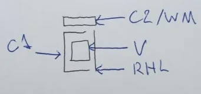In this way, all graphs are monospacing horizontally.
I will explain what the C2/WM is in a bit. The C1 shows the onset consonant of a syllable is, based on the modifications made to the base semi-square line which "hugs" the V. These modifications correspond to their respective phonemes as follows:
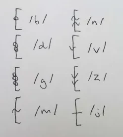And the V shows the nucleus vowel of a syllable. The square in the labeled graph is replaced by one of the following to represent the corresponding nucleus vowels:
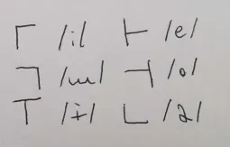The way I derived these symbols is mostly arbitrary for the C1, but the V is based entirely (with some minor creative liberty) on the International Phonetic Alphabet vowel chart, as it is commonly rendered. Each V is made of two lines, the intersection point of which corresponds roughly to where the vowel falls on the vowel chart. If you ever forget the precise phonemic value of the Quevish vowels, it can be roughly derived from the V graphemes; which I reckon is a nice feature. The consonants are mostly arbitrary and vibes-based, but the plosives all have circles, the nasals all have tilde-like waves (based on the IPA diacritics for nasalization), the fricatives all have downward-pointing arrows, and the palatal approximant is just a line since I couldn't think of anything more intuitive that was still readable.
As an example of a word written in this orthography (ignoring C2/WM, we'll get there), we can take the verb phrase initializer, "guby":
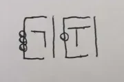... which is written the way it is because:
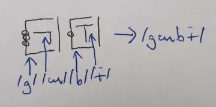So that should give you an idea of how the Basic Featural Orthography works for C-V pairs. Notice that, as I said, the RHL has no phonemic value and is only used for written clarity to make it easier to quickly read two separate graphs as being - indeed - separate.
As for the C2/WM, it makes sense to consider it as being divided into three parts, all of which are optional and used only in specific situations. These parts are the word start (WS), the second consonant (C2), and the word end (WE). They are divided in a manner like this:
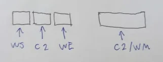... where the collective whole (C2/WM) is divided into the WS on the left, the C2 in the middle, and the WE on the right. The WS and WE have no direct value on the phonemic values within a syllable, but rather dictate interations between syllables. Rather intuitively, the WS (word start) is written if a syllable is word-initial and the WE (word end) is written if a syllable is word-terminal. If a word consists of one syllable, you would expect both to be present. The WS is written as a diagonal down-right facing line, the WE as a diagonal up-right facing line. See below an example of what a word-initial, word-middle, and word-final syllable ("wi") would look like according to this rule:
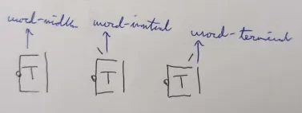If you remember back to the phonotactics, there are three possible syllable structures: CV, CVm, and CVn. The C2 of a graph is used to indicate the phonemic value of the coda consonant of a syllable. If it is absent, the syllable has no coda consonant and takes the CV form. Otherwise, the C2 corresponds to the "m" and "n" sounds as follows:
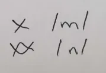As an example of how the C2 is written, see the following word, written with WS and WE omitted but featuring C1, V, C2, and RHL:
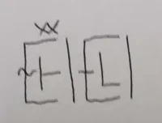... written as such because:
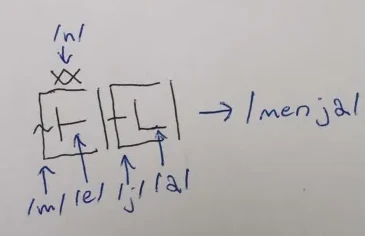And for an in-practice example, take the sentence "wi guby goju":
trans. "living happens", "things are alive", "life is occuring", etc.
Which is written as:
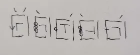... because:
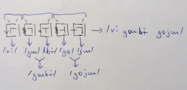In this larger example we see a demonstration of all the orthographic features except for the graph C2. It is easy to see at a glance where words begin and end due to the symmetric WS-WE markings, allowing the Basic Featural Orthography to be written without requiring any spacing between graph, which is done when using this system. Spacing is arbitrary in the BFO and is mostly insignificant, having no influence on the written value of a phrase. However, this is untrue in the context of larger writing. Due to there being no punctuation marks, spacing ought to be used when separating:
Of course, you don't actually need to follow these spacing guidelines if contextually unnecessary, but I still recommend that you do, it aids readability and helps disambiguate various sentence boundaries in general.
This should not be treated as an exhaustive list of root definitions. In fact, they aren't really "definitions" at all. Instead, these are just some words intended to describe the "vibe" of various roots. By design, Quevish roots are extremely broad in meaning and you may attribute personal qualities to each of them, which may alter your interpretation of the language heavily.
| Root | Meaning |
| bam | fight, conflict, warfare, terrorism, unjust |
| be | material, really existing, actual |
| bo | advanced, experienced, capable of thought |
| bym | usage, consumption, exploitation, able to be used |
| da | immaterial, ideal, not existing, conceptual |
| du | good, helpful, kind, simple |
| jen | hidden, secret, encrypted, clandestine |
| jo | bad, evil, harmful, complicated |
| ju | communication, talking, language, linguistics |
| min | truth, correctness, following standards, compliant |
| mo | quantity, large, number, many, enlargement, growth |
| my | solid, single part, whole, entirety |
| myn | liquid, gaseous, fluid, changing, in flux |
| nin | falsehood, defiance, incorrect, non-standard |
| no | small, few, shrinking, reduction in scope |
| ny | primitive, incapable of thought |
| wi | living, moving, target of empathy |
| wo | life sustaining, life causing, divine |
| wun | requirement, prerequisite, before, previous |
| Abbreviation | Meaning |
| MOD | "ga" modifier |
| VPINIT | "guby" verb phrase initializer |
| NPINIT | "gane" noun phrase initializer |
| ID | "zi" identity requeuer |
| VPNPCOM | "zewi" intransitive VPNP combiner |
| VPAS | "goju" VP asserter |
| TGAP | "zywo" target applier |
| PNEG | "zezy" passive negator |
| ANEG | "gezy" active negator |
| INT | "zanme" interrogative mood marker |
| APST | "gymbi" ancient past marker |
| DPST | "gymbe" distant past marker |
| PPST | "gymba" proximate past marker |
| PRS | "gymby" present marker |
| PFUT | "gymbo" proximate future marker |
| DFUT | "gymbu" distant future marker |
| JAND | "gemi" AND-ative joiner |
| JOR | "gumo" OR-ative joiner |
| JXOR | "gumon" XOR-ative joiner |
The gloss for personal pronouns takes the form of "{person}{gender}{number}".
Person may be one of:
Gender may be one of:
Number may be one of:
This work by tirimid is licensed under CC BY-SA 4.0